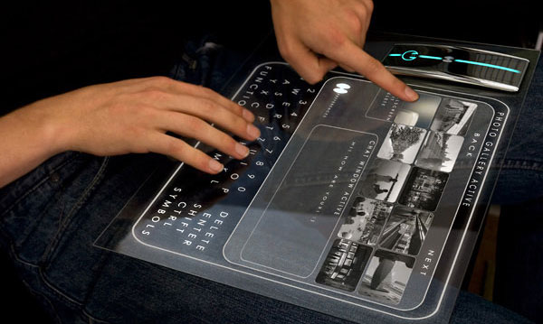

ПК будет мал по размерам и иметь мощь современных суперкомпьютеров. ПК станет хранилищем информации, охватывающей все аспекты нашей повседневной жизни, он не будет привязан к электрическим сетям. Этот ПК будет защищен от воров благодаря биометрическому сканеру, юторый будет узнавать своего владельца по отпечатку пальца
Основным способом общения с компьютером будет голосовой. Настольный компьютер превратится Е СТОЛ, вернее, последний превратится в гигантский компьютерный экран — интерактивный фотонный дисплей. Клавиатура не понадобится, так как все действия можно будет совершите прикосновением пальца. Но для тех, кто предпочитает клавиатуру, в любой момент на экране может быть создана виртуальная клавиатура и удалена тогда, когда в ней не будет нужды.
Компьютер станет операционной системой дома, и дом начнет реагировать на потребности хозяина, будет знать его предпочтения (приготовить кофе в 7 часов, запустить любимую музыку, записать нужную телепередачу, отрегулировать температуру и влажность и т. д.)
Жесткий диск будет голографическим и чем-то будет походить на CD-ROM или DVD. То есть это будет прозрачная вращающаяся пластинка с записывающим лазером с одной стороны и считывающим лазером с другой; объем хранимой информации на таком диске будет достигать просто астрономических величин — несколько терабайт. При таких объемах можно будет хранить каждую мельчайшую деталь жизни.
Процессор ПК будущего будет функционировать по тем же принципам, что и сегодня. Но вместо электронных микропроцессоров, которые являются и мозгом, и мускулами современного компьютера, процессор будущего будет иметь опто-электронные интегральные схемы (чипы будут использовать кремний там, где требуется переключение, и оптику для коммуникаций). Это даст огромный прирост в быстродействии и эффективности. Сегодняшний компьютер тратит слишком много времени на ожидание данных для обработки. Мгновенная оптическая связь и память, работающая так же быстро, как и процессор, обеспечат непрерывный поток данных процессору для обработки. При передаче данных со скоростью, не ограниченной больше электронной передачей, можно будет достигнуть частот порядка 100 ГГц, то есть в 100 раз быстрее, чем сегодня.
Процессор будущего может быть шестигранником, окруженным со всех сторон быстрым кэшем так, чтобы требуемые данные могли быть выбраны из ближайшей части кэша. Именно таким образом и будет достигнута производительность сегодняшних супер-ЭВМ
При применении оптической связи в компьютерных технологиях будет получен тот самый эффект, который наблюдали в 1980 г., когда компьютеры на базе 80286 имели память, работающую на частоте процессора. Скорость шины памяти — та скорость, с которой происходит обмен данными между процессором и памятью, — была равна частоте процессора (всего 8 МГц). Процессор получал данные так же быстро, как мог их обработать, в результате процессор меньше находился в режиме ожидания данных.
Средний компьютер сегодня имеет процессор 1000 МГц и шину 133 МГц. Несмотря на различные технологические подвиги, процессор все еще тратит две трети времени на ожидание данных.
Оптоэлектроника решит эту проблему. При должным образом разработанной шине оптической памяти скорость выборки данных из памяти будет снова приравнена к частоте процессора.
Конечно, это потребует более быстрой обработки данных в памяти и, соответственно, другой, более быстрой, архитектуры памяти, которая, к счастью, уже есть или в скором времени будет. Большой кэш сверхбыстрой энергонезависимой магнитной RAM (память с произвольным доступом) будет содержать данные, срочно требующиеся процессору.
Для нового быстрого кэша придется избавиться от неэффективности сегодняшней синхронной динамической памяти, нуждающейся в постоянном обновлении. Неэффективность кэша сегодня такова, что две трети времени уходит на процессы обновления (таким образом, его реальная производительность в три раза меньше).
Полупроводниковая технология будущего будет основана не на кремниевой памяти, а на магнитной памяти в молекулярном масштабе. Так как мельчайшие элементы будут намагничены для представления нулей и размагничены для представления единиц, информация может быть легко и быстро обновлена простым электрическим сигналом. Весь процесс будет гораздо быстрее того, что мы имеем сегодня, и будет вполне реально удовлетворять требования процессора, работающего на частоте 100 ГГц.
Основная память компьютера будет вполне оптической, фактически голографической. Голографическая память имеет трехмерную природу, и можно эшелонировать любое количество плоскостей памяти в прямоугольное твердое тело. Объем чипа в 256 ГБ легко достижим.
Компьютер будущего будет практически независим от источников электропитания. Одно из самых больших преимуществ фотонных цепей — крайне малое энергопотребление. Небольшая, но длинная, подобная стержню литиевая батарея, изогнутая в тороид и установленная в компьютер, будет функционировать пару недель. А подзарядить ее можно будет так же легко, как сегодня подзарядить сотовый телефон.
Размер экрана не будет играть никакой роли в компьютерах будущего. Он может быль большим, как ваш рабочий стол, или маленьким. Большие варианты компьютерных экранов будут основаны на жидких кристаллах, возбуждаемых фотонным способом, которые будут иметь гораздо более низкое энергопотребление, чем сегодняшние LCD-мониторы. Цвета будут яркими, а изображения — точными (возможны плазменные дисплеи). Фактически сегодняшняя концепция «разрешающей способности» будет в значительно степени атрофирована.